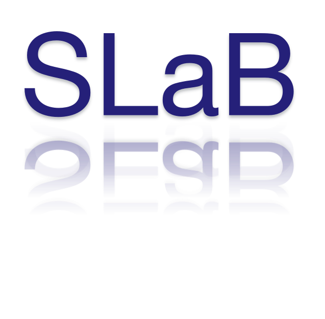
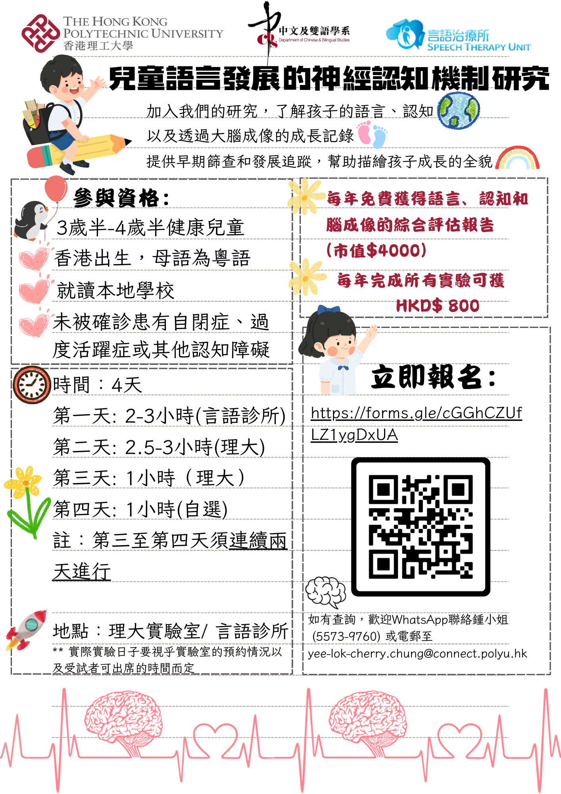

WELCOME!
We are based in the Division of Humanities at Hong Kong University of Science and Technology.
News and Events
- 05/08/2024 Jiayu LIANG, who graduated from Shandong University, joined our lab as RA!
- 02/08/2024 Jeremy presented our Aging project at the 9th Golden Age Expo and Summit (GAES).
- 31/07/2024 Yuqi successfully defended her MPhil thesis titled "Cantonese Tone Processing in the Forced-attention Dichotic Listening Task by Cantonese-dominant Bilingual Speakers”.
- 11/06/2024 Our study “Distributional learning and overnight consolidation of non-native tonal contrasts by tonal language speakers” is published in Journal of Speech, Language, and Hearing Research.
- 06/06/2024 Our study “The role of coarticulatory tonal information in Cantonese spoken word recognition: an eye-tracking study” is published in Linguistics Vanguard.
- 21/05/2024 Our team member Kangdi LIU was awarded the 2023-2024 Postgraduate Research Grant for the Division of Humanities.
- 23/04/2024 Dr. Quentin QIN was offered an Early Career Travel Award for the 186th ASA Meeting in Canada.
- 12/04/2024 Our team member Yuqi WANG was awarded the prestigious Hong Kong PhD Fellowship. Congrats!
- 10/04/2024 Our new article about L2/L3 tone perception was published in Second Language Research.
- 19/03/2024 An interview featuring our sleep and language learning research was published in Hong Kong Wen Wei Po.
- 01/03/2024 Three studies led by students were accepted to the ASA (Ottawa) and the ASA (HK) meetings.
- 18/11/2023 Keep an eye on our team's work presented at TAI 2023 in Singapore and AMLap Asia 2023 in Hong Kong.
- 03/10/2023 Our team member Yuqi WANG received Dr. Charles Chan Postgraduate Scholarship 2023/24 for her academic achievement.
- 01/09/2023 Welcome to our new member Kangdi LIU (RPG) and Susu LAI (RA)! And farewell to our team alum Ruofan.
- 07/08/2023 Our research team have two papers (ID: 157 and 499) presented at the ICPhS 2023 in Prague. Please stop by!
- 01/07/2023 Our project about tone learning and memory will be funded by Early Career Scheme, Research Grants Council (Hong Kong).
- 23/05/2023 Jeremy and Ruofan were awarded the prestigious Hong Kong PhD Fellowship for PhD studies. Congrats!
- 09/05/2023 Yuqi's paper was accepted for oral presentation to the FoCaL-6 in Hong Kong.
- 24/03/2023 Our paper was accepted to the HISPhonCog 2023 in Seoul, Korea.
- 01/02/2023 We are looking for a Research Assistant/Post-doctoral Fellow. Please apply here. The deadline is 28 Feb, 2023.
- 01/01/2023 Our eye-tracking project collaborating with Dr. Jingwei Zhang will be funded by the Multiple-Year Research Grant, Macau.
- 15/10/2022 Our team member Jeremy Chui (RPG) received Dr. Charles Chan Postgraduate Scholarship 2022/23.
- 01/10/2022 Our project about sleep and mental health was funded by Sustainable Smart Campus as a Living Lab Project.
- 01/09/2022 Our project about ageing and language learning was funded by HKUST IEMS Research Grants.
- 01/09/2022 Welcome to two new members Ruofan WU (RA) and Yuqi WANG (RPG)! And farewell to our team alum Rui Jin.
We are interested in...
- Second-language learning of speech prosody
- Sleep-dependent consolidation of lexical tones
- Aging, cognitive, and language learning


Contact us!
Email: qinlabhkust@gmail.com
Location: Room G005,
Cheng Yu Tung Building,
The Hong Kong University of Science and Technology,
Clear Water Bay, Kowloon, Hong Kong